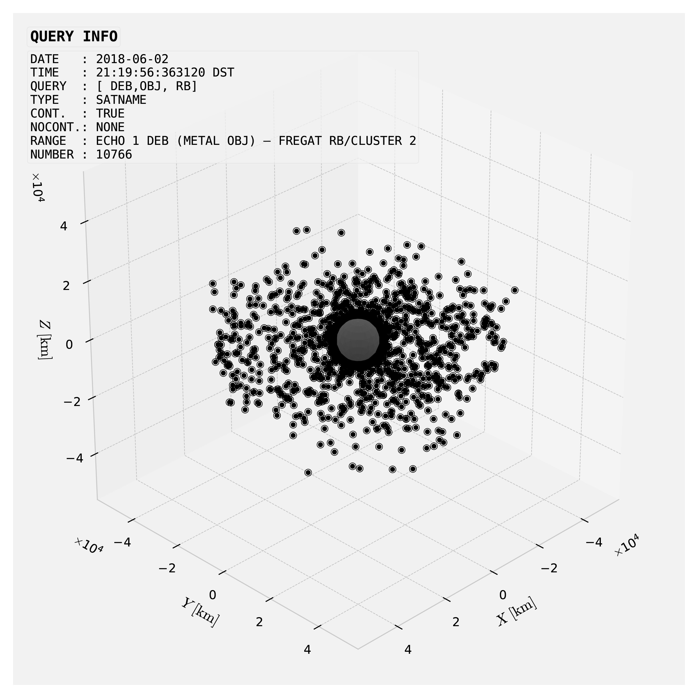
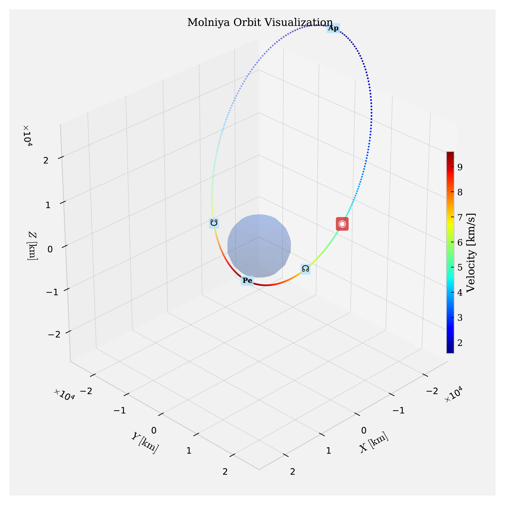
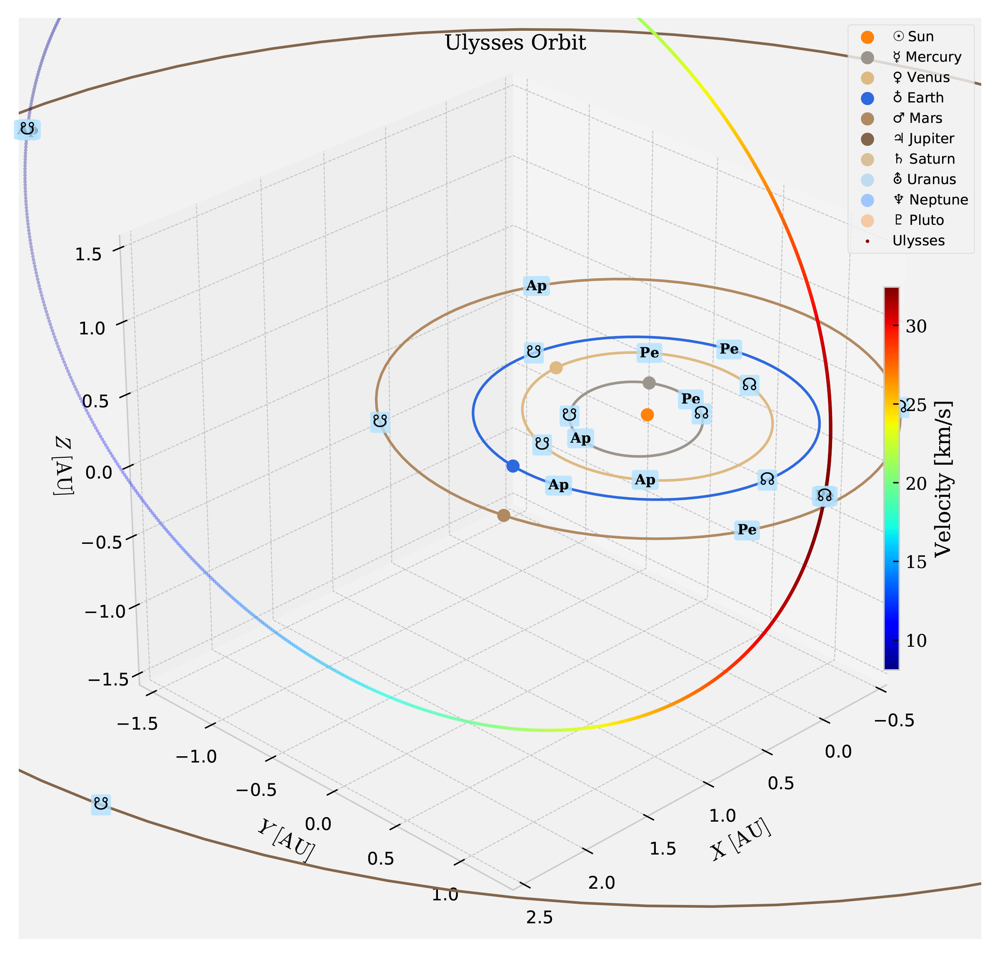
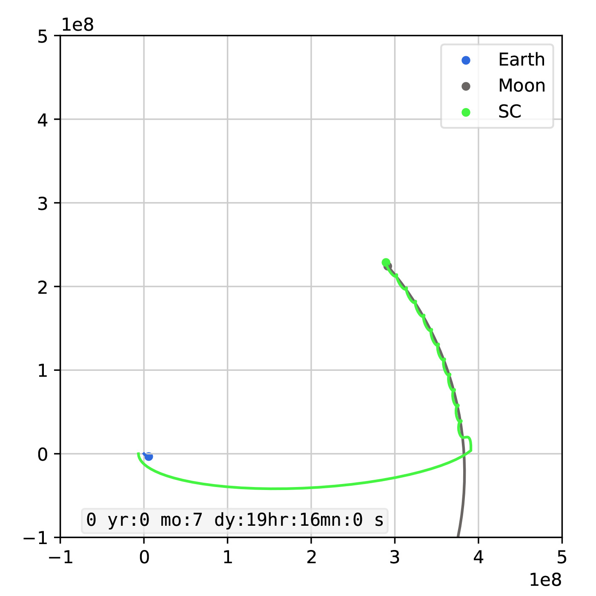
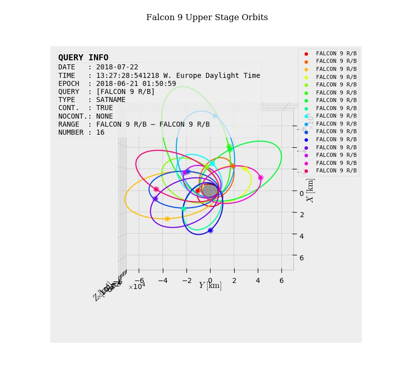
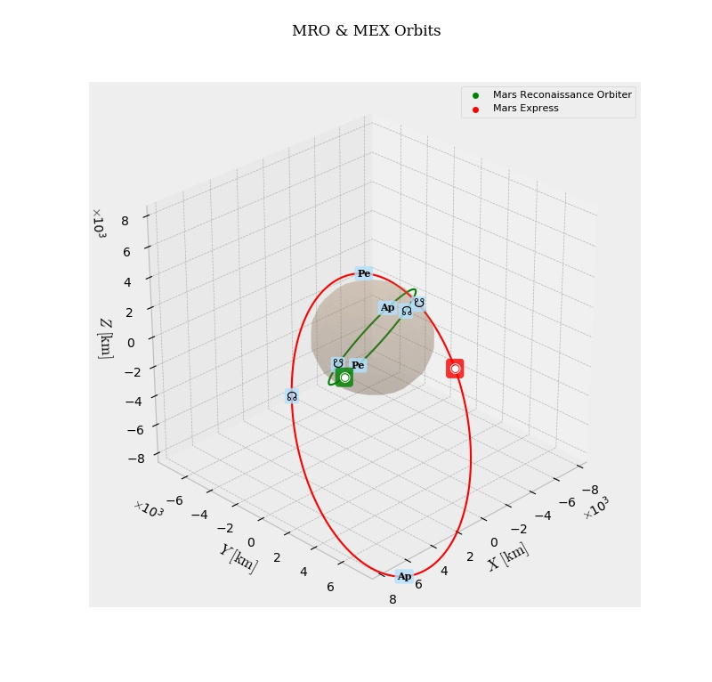

The eos3d library is a lightweight orbital mechanics calculation and visualization suite based on matplotlib (eos3d-mpl) and VTK (eos3d). It includes orbit visualization, SPACETRACK Two-Line Element retrieval and current satellite position visualization, Solar System orbits and planetary position visualizations and real-time n-body simulations.
Future Work
Currently a VTK/vispy-based implementation of eos3d is in development, which will allow for high-quality interactive orbit visualization. Additionaly, high-fidelity positioning of celestial bodies will be enabled using NASA's NAIF (Navigation and Ancillary Information Facility) CSPICE kernels and JPL's DE430 ephemeris. Moreover, efficient n-body propagation is planned in the future, as well output of porkchop plots and the like. Please consult the documentation for further details.
Documentation
The documentation of eos3d-mpl may be downloaded via the following link: documentation.
Screenshots

Space debris visualization using SPACETRACK data and SPG4 propagation.

Molniya orbit visualization, with velocity gradient.

Solar System and Ulysses orbit visualization.

N-body propagation of an Apollo 11-like lunar rendezvous.

Falcon 9 rocket body orbits and positions.

Mars Reconaissance Orbiter & Mars Express orbits as of March 13, 2018.